Setting Up the App
A SoftEther VPN profile has the same fields on iPhone and Android. This page goes through them in the order the profile editor shows them.
The fields, defaults, footers and messages were read from the source code of both apps, and the screenshots were taken from them with example profiles. What each setting did against a real server is in Test results.
Add a profile
Tap + on the home screen, tap Protocol and choose SoftEther VPN. Fill in the fields below and tap Save. Save names the first field that is still missing or wrong instead of saving an incomplete profile.
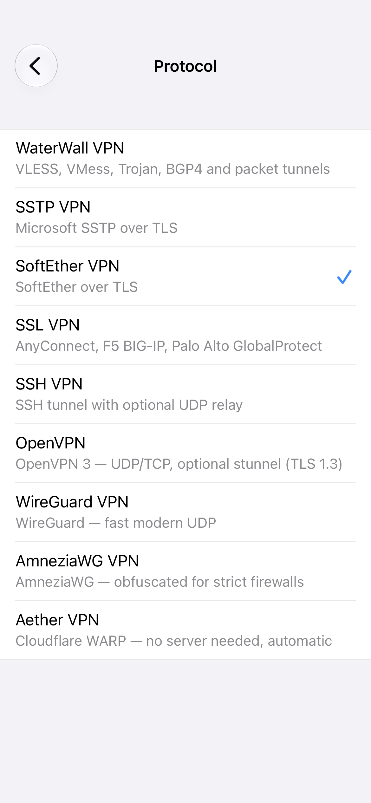
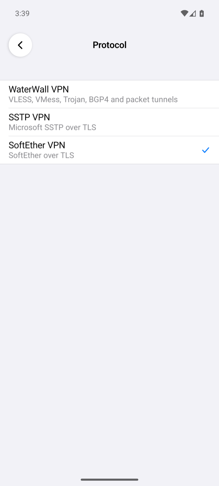
Server
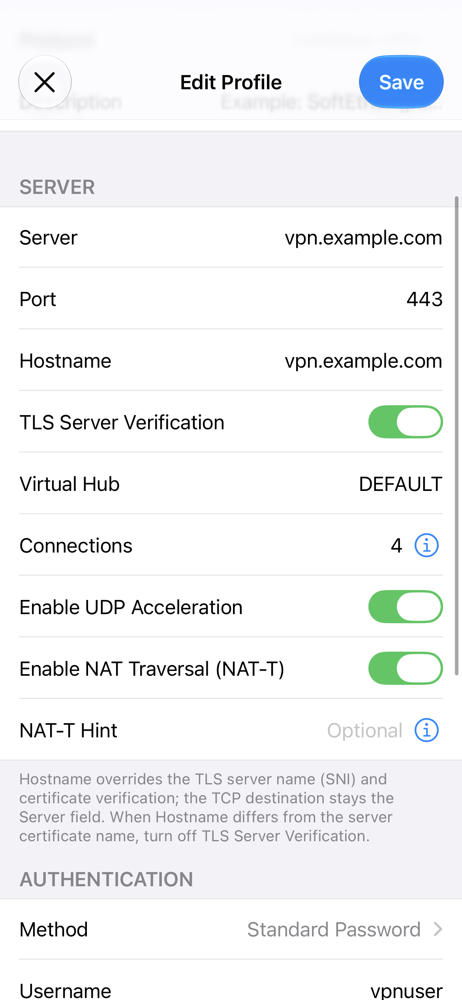
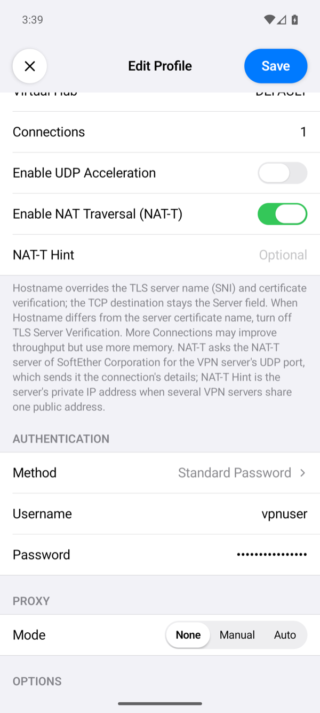
| Field | What to enter |
|---|---|
| Server | The server's DNS name, for example vpn.example.com, or its IP address. The app connects here. |
| Port | Empty means 443. SoftEther VPN Server also listens on 992 and 5555 by default; all three worked in our tests. |
| Hostname | Optional. A name to send in the TLS handshake (SNI) and to check the server certificate against, while the connection still goes to Server. Use it when Server is an IP address and the certificate names the server. |
| TLS Server Verification | On by default: the app accepts only a certificate that the phone trusts and that is valid for Hostname, or for Server when Hostname is empty. Off skips that check. See the certificate warning. |
| Virtual Hub | The hub on the server; empty means DEFAULT. |
| Connections | 1 to 32 TCP connections for one session (default 1). More connections can carry more traffic but use more memory. With the server's VoIP / QoS function on, its default, a session uses at least two. After the first, the app adds one connection per second until it has them all. |
| Enable UDP Acceleration | Off by default. On: the app and the server also exchange the VPN's packets over UDP when the server accepts it. It is not used through a proxy. |
| Enable NAT Traversal (NAT-T) | Off by default. On: when the server cannot be reached over TCP, the app reaches it over UDP through the NAT-T servers of SoftEther Corporation, which receive the connection's details. Off: the app never contacts those servers. |
| NAT-T Hint | Shown when NAT-T is on. Optional: the server's private IP address when several VPN servers share one public address. With a hint the app connects over NAT-T only. |
Authentication
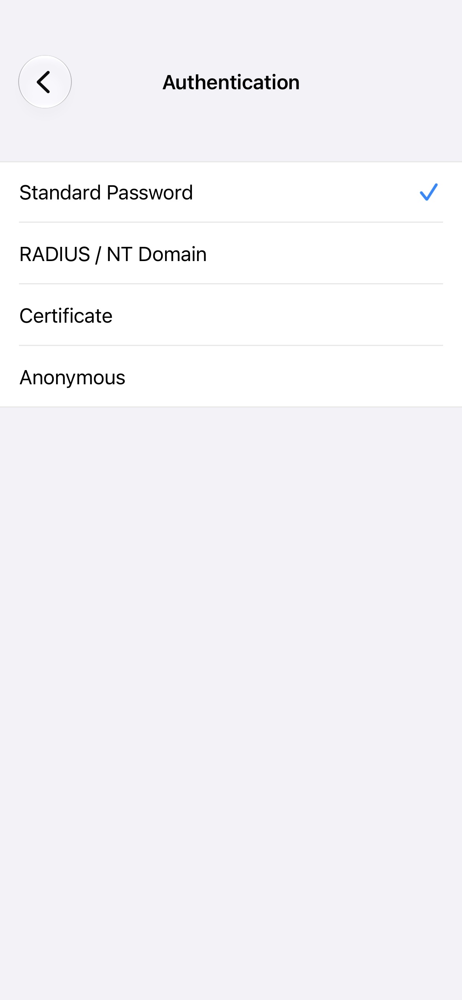
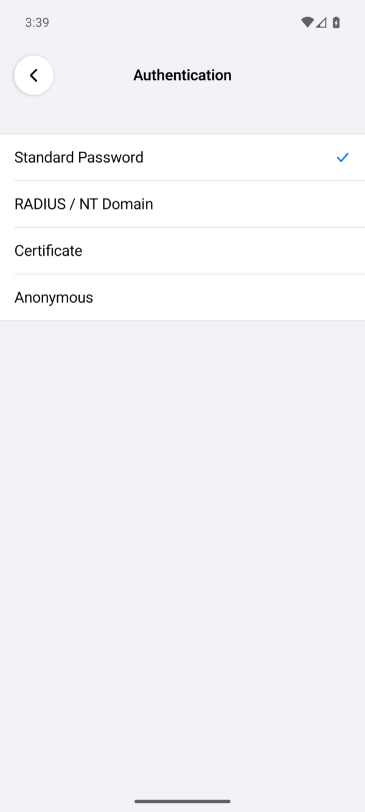
| Method | What it does |
|---|---|
| Standard Password | Default. SoftEther's own password login: the password itself never leaves the phone, only a proof of it. The user on the server has password authentication. |
| RADIUS / NT Domain | Sends the password inside the TLS connection, and the server checks it with its RADIUS server (or a Windows domain, on SoftEther for Windows). |
| Certificate | Logs in with a client certificate; see Certificate login. |
| Anonymous | Logs in as a user with anonymous authentication; there is no password. |
Username is always needed. Password is needed for the first two methods. The method must match the user's kind on the server; otherwise the server refuses the login.
Certificate login
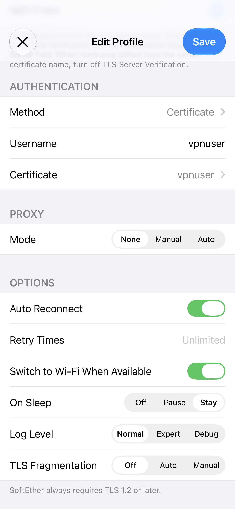
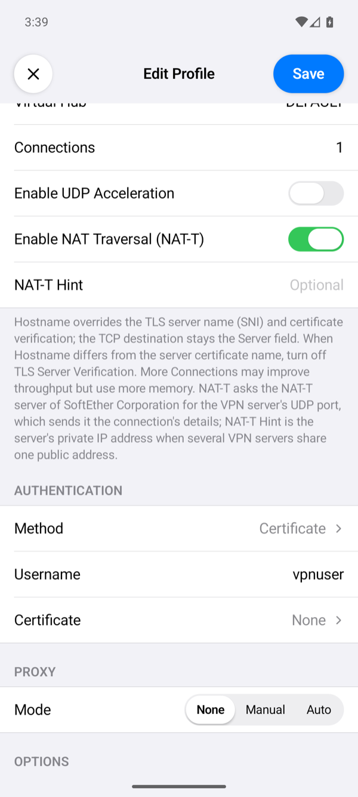
With Method set to Certificate, tap Certificate, then Import, and choose a .p12 or .pfx file that holds the client certificate and its private key. The app asks for the file's passphrase and keeps the certificate in the iPhone's Keychain or, on Android, encrypted with a key in the Android Keystore. Both kinds of certificate users on the server work: a signed certificate, checked against a certificate authority the hub trusts, and an individual certificate, stored on the server (SoftEther VPN Server).
Proxy
The app can reach the server through a proxy. The proxy carries only the connection to the server; the traffic inside the VPN does not use it.
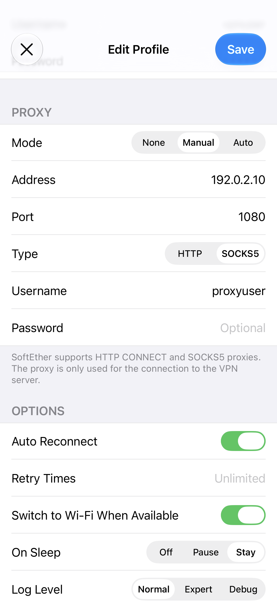
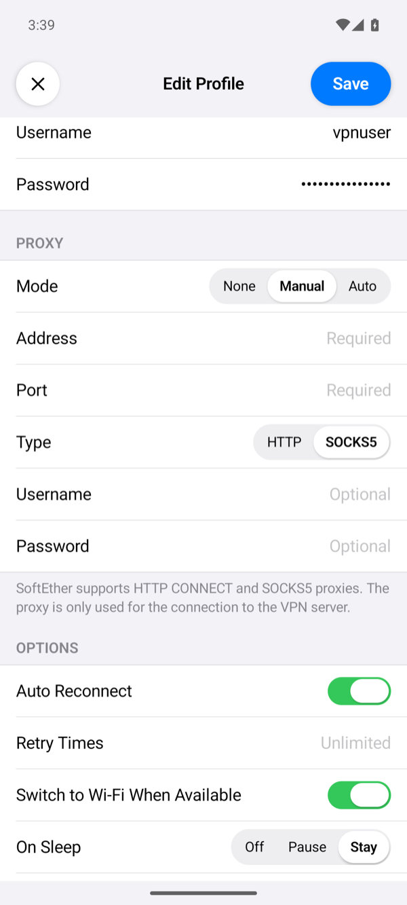
| Mode | What it does |
|---|---|
| None | The app connects to the server directly (default). |
| Manual | The proxy at Address and Port, of the Type you choose: HTTP (an HTTP CONNECT proxy) or SOCKS5. Username and Password are optional and go to the proxy. |
| Auto | A proxy auto-configuration (PAC) file at PAC URL, over http or https. The app runs its FindProxyForURL for the server: PROXY is used as HTTP CONNECT, SOCKS and SOCKS5 as SOCKS5, and DIRECT connects directly. When an entry cannot be reached, the app tries the next one. The username and password go to the proxy the script picks. |
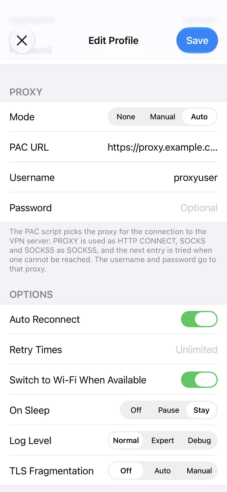
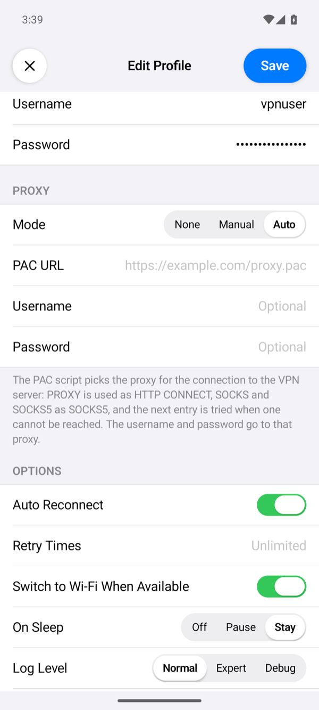
Options
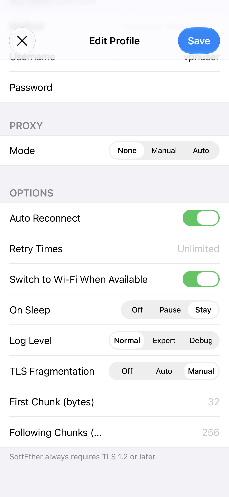
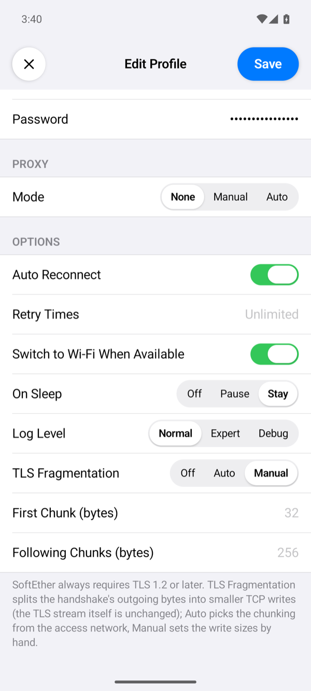
| Option | What it does |
|---|---|
| Auto Reconnect, Retry Times | Auto Reconnect (on by default) connects again 2 seconds after a connection that was up is lost, and keeps trying while the server is away. Retry Times limits the failed attempts in a row; empty means no limit. A login the server refused is never retried: the password or certificate must be fixed first. Without Auto Reconnect, a lost connection ends the VPN with Connection lost (auto reconnect is off). |
| Switch to Wi-Fi When Available | On by default: when Wi-Fi appears while the VPN is up, the app moves the connection to it. |
| On Sleep | Stay (default) keeps the connection while the device sleeps. Pause closes it and connects again on wake. Off closes it; on wake it connects again only with Auto Reconnect, otherwise the VPN ends with The connection was closed while the device slept. |
| Log Level | How much the connection log shows. Normal: the milestones, such as connecting, the session, the network settings and errors. Expert adds the states the connection goes through and the DHCP and ARP lines of the virtual adapter. Debug adds the SoftEther core's own lines, such as each TCP connection it opens. No level writes TLS session secrets. Tap the status under the power button to open the log. When the app gives up on a connection, a line starting with SoftEther: closing with reason: names the reason. |
| TLS Fragmentation | Splits the outgoing bytes of the TLS handshake into small TCP writes; the TLS data itself is unchanged. Auto sends the first 43 bytes on their own, so that the server name lands in a later write, then 256 bytes per write (128 on cellular) a few milliseconds apart. Manual takes First Chunk (default 32 bytes) and Following Chunks (default 256 bytes). |
The certificate warning
With TLS Server Verification on, the app checks the server's certificate before it connects: it must chain to a root the phone trusts and be valid for the name the app checks. When it is not, the app shows DANGEROUS! with each certificate of the chain and what is wrong with it.
- Continue connects this once without checking the certificate.
- Save and Continue turns TLS Server Verification off in the profile and connects.
- Cancel does not connect.
Connecting to a server's IP address instead of its name brings this warning, because the certificate names the server, not its address. Use the name, or put the name in Hostname.
Connect and check
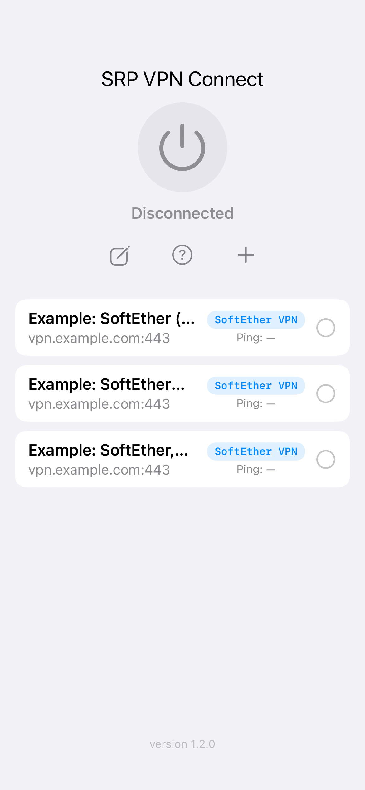
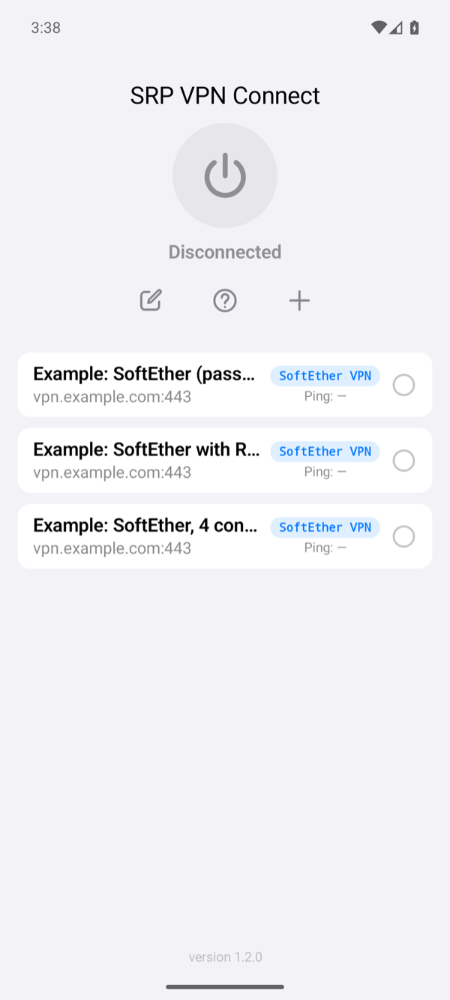
Select the profile on the home screen and tap the power button. The status changes to Connected once the hub has given the phone an address. The row of the profile then shows the time of one request through the tunnel. If it fails, the app shows Connection Failed with a reason; Troubleshooting explains each one.